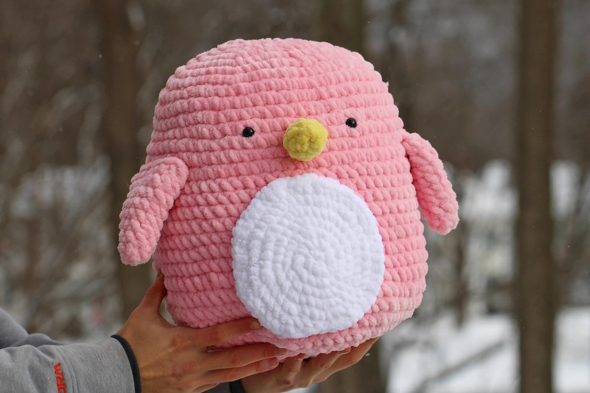

Yarn Weight
Yarn can be categorized in 8 weights: Superfine, Fine, Light, Medium, Bulky, Super Bulky, and Jumbo. Yarn weight is used to describe the thickness of the yarn. Based on the goal of your project, you should pick the appropriate sized weight yarn. If your goal is to make socks, you'd want to try a thinner weight such as Fine as opposed to Jumbo.
Lace
Lace yarn is the thinnest yarn with a weight 0. Lace is typically used to make very thin materials such as shawls, doilies, and cardigans.
Superfine
With a yarn weight of 1, Superfine yarn is generally used to make the same projects as lace weight yarn due to thier similar size, as well as beanies and baby clothes.
Fine
Fine yarn is a size 2 weight with more projects leaning towards socks, loose cardigans, and thin weight clothing items.
Light
Light weight yarn size 3 will still have thin material items mostly, baby blankets, and baby clothes.
Medium
Medium weight size 4 yarn, you will start to see more commonly found yarns such as acrlyic. It is the most versatile yarn in projects due to its typical low price.
Bulky
Bulky weight size 5 yarns are used in bigger projects more often than not because of its thicker size, it can work up a project very quickly.
Super Bulky
Superbulky weight size 6 yarn is also used in bigger projects such as blankets, winter textiles, and stuffed plushies.

Jumbo
Concluding our last yarn weight, Jumbo yarn size 7 weight. This yarn will usually be seen in thicker winter textiles and blankets.